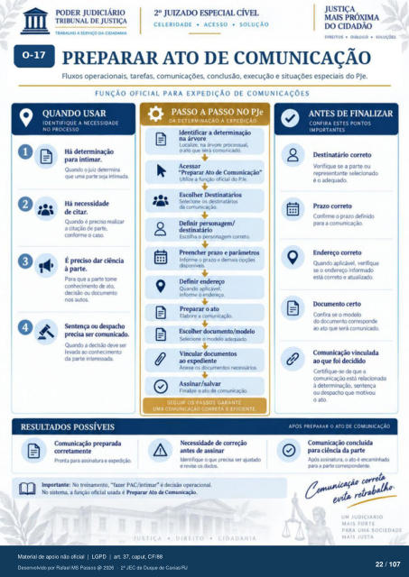

Transcrição automática em português, ainda não revisada. Confira grafia, prazos e termos jurídicos na imagem e no PDF antes de utilizar.
TRABALHO A SERV'CO DA CIDADANIA
CELERIDADE • ACESSO • SOLUÇÃO
DIREITOS • CHALOGO • SOLUÇOU
PREPARAR ATO DE COMUNICAÇÃO
Fluxos operacionais, tarefas, comunicações. conclusão, execução e situações especiais do PJe.
FUNÇÃO OFICIAL PARA EXPEDIÇÃO DE COMUNICAÇÕES
QUANDO USAR
IDENTIFIQUE A NECESSIDADE
NO PROCESSO
Há determinação para intimar.
Quando o juiz determina uma parte se» htimuia.
Há n«essidade de citar.
Quanch é realizar a citação de parte,
cmforme 0 Caso É pr«iso dar ciência
à parte. Para que a parte tome
conh«irrmto ato, dKisáo dccurnento
nos autos ou &spacho
pr«isa ser comunicaio. Quando a decA)
conhecirrwito da parte interessuia.
RESULTADOS POSSÍVEIS
Comunicação preparada PrMtta para assinatura e
PASSO A PASSO NO PJe
DA DETERMINACÀO À EXPEDICÀO
Identificar a determinação na árvore
Ltral.ze. na árvore prcxessual. o ato será comunicado.
"Preparar Ato de Comunkação" Utilize a furoo oficial do PJe.
Escolher Destinatários Sele•cione os destinatários
da comunicação. prsonagem/
destinatário Escolha o g»rsonagem correto.
Preencher prazo e parâmetros Informe o prazo e demais
disponíveis Definir endereço
Quando aplicável, informe o endereço
Preparar o ato Elabore a comunicaçü:».
Selecione 0 Vincular documentos
ao Anexe os documentos
4. Assinar/salvar
Finalize o ato de comunicaçã).
SEGUIR OS PASSOS GARANTE
UMA COMUNICAÇÃO CORRETA E EFICIENTE
de antes de assinar
Identifique o (Ve precisa wr e os dados.
Imprtante: No treinxnento. "fazer PAC/intimar• é sistema. a funçáo oficial usada é Preparar Ato
4
Cl DADA NIA
ANTES DE FINALIZAR
CONFIRA ESTES PONTOS
IMPORTANTES
correto Verifique se a parte Ou
representante s&ionO CM1firme 0 prazo definia)
para a Endereço correto
Quando aplicável, v«ifique se o endereço informado
esta correto e atualiuio. D«xumento certo
Cmfira se 0 mcx% do dcxumento
ato que será cornuiic"i Cornunicaçào vinculada
ao que foi decidido Certifique-se de que a
está à sentença
ou despacho que motivou o ato.
APOS PREPARAR O ATO DE COMUNICAÇÃO
Comunicação concluída para ciência da parte
assinatura. o ato é «rarninhxb pua a parte
UM JUDICIARIO
MAIS FORTE
PARA UMA SOCIEDADE
MAIS JUSTA
Ver também o infográfico original (página 22)
